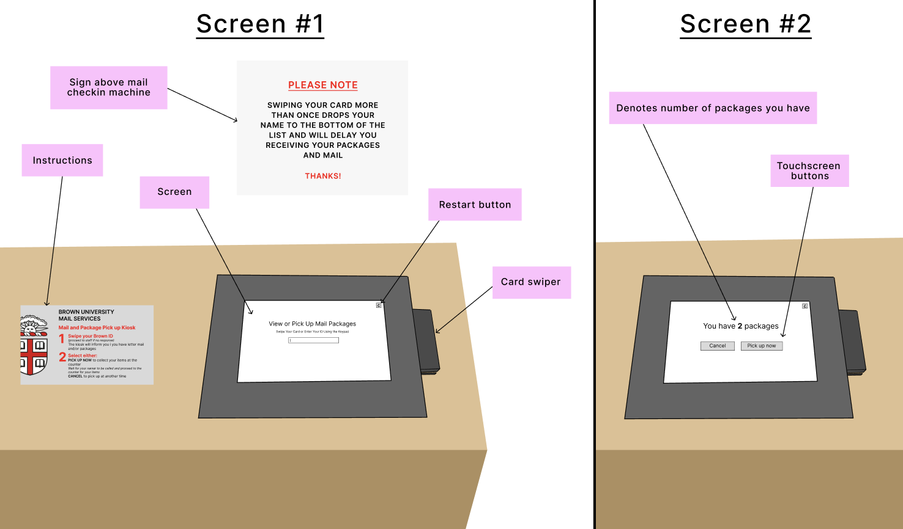
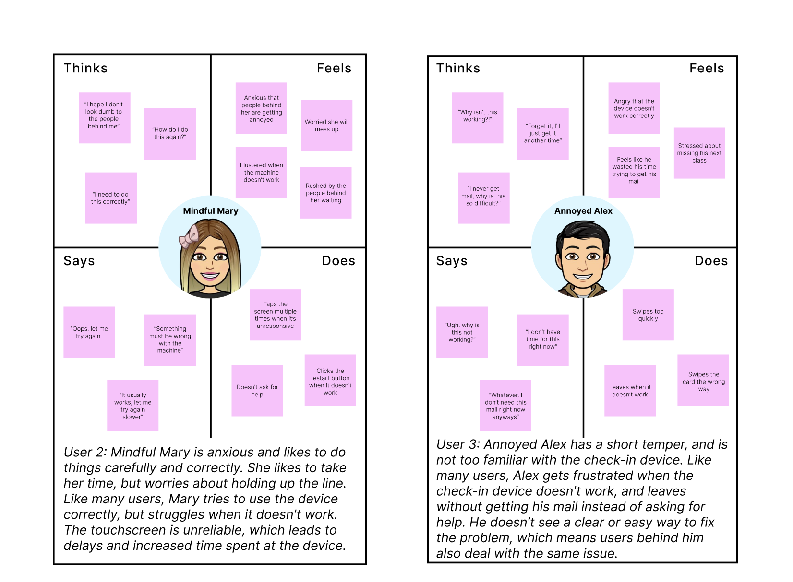
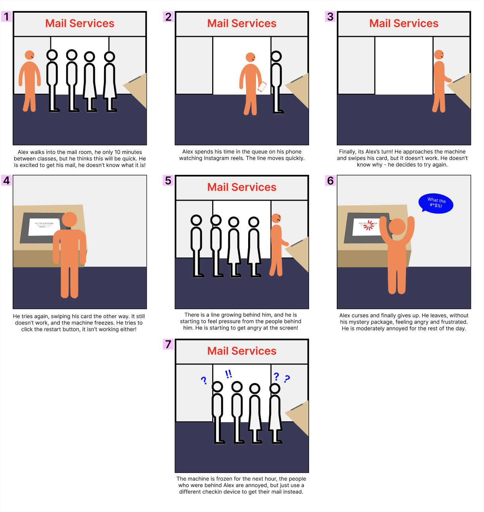

Introduction
For this project, I will be stepping into the shoes of other people to understand their thought processes when using a specific interface. This is incredibly important as an aspiring software engineer, as it helps me understand how users think, including what they want, what they dislike, and the issues they encounter.
My aims for this project are to:
- Learn to make real-life observations and construct unbiased interviews in public
- Understand how to illustrate user needs and experiences based on empirical observations through personas and storyboarding
- Create engaging narratives that demonstrate the user journey end-to-end and the goals and characteristics of the depicted persona
Details
For my project, I will be observing users at the Brown University Mailroom, where all students pick up their delivered mail. There are 3 mailroom check-in machines in total.
I have chosen this interface because it provides an opportunity to analyze a broad yet specific range of users - Brown University students - who vary in identities, backgrounds, experiences and preferences. This diversity allows for a very interesting examination of user behaviors and challenges. Additionally, the mailroom check-in process is an essential part of student life, especially during peak times such as tax season and move-in periods, when hundreds of students rely on this system daily. Given its high usage and importance, ensuring the interface functions efficiently is critical to improving the overall student experience.
Interview Questions
In order to gather information and opinions, I will be interviewing students after using the device - here are the questions I will be asking them:
Sketches & Context
Below are sketches to show the different components of the mailroom checkin device, as well as some of the relevant surroundings. There are 3 of these devices in total, 2 right outside the mail room, and 1 inside. Below the sketches, I will be explaining more about the interface, to give some context about the device and how it works.
The problem this interface is trying to solve:
The interface is designed to provide a convenient and orderly way for students to pick up their mail, with the goal of reducing wait times and keeping the process organized, especially during peak periods where many students are there at once.
How it works
- The user goes up to one of the three check-in machines. The screen will be active (screen #1) and ready for the user to swipe their card
- The user swipes their student ID card in the card swiper on the right side of the screen, ensuring the card's face is towards them.
-
- If the swipe fails, the user should either click the restart button or swipe again.
- If the swipe is successful, a second screen appears, displaying the number of packages the user has. They must choose an option using the touchscreen buttons:
- "Pick Up Now" to proceed with picking up mail.
- "Cancel" to exit the check-in process.
- If the user chooses "Pick Up Now," they must wait in the mailroom until their name is called.
- When their name is called, they go up to the front to the mailroom worker, swipe their student ID again, and sign their name on the pad to complete the pickup.
Observing Users
To understand how real-life users interact with the mailroom checkin system, I wanted to observe them up close to gather information. I chose to observe users of the mailroom checkin device during a peak hour during the day, which is directly after Wednesday 12-12.50pm classes. On the day I observed, from 12.50-1pm there were long lines of students queueing up to use the mailroom checkin devices. After 1pm, the volume of students coming to get their mail decreased, and lines got much shorter. I observed the checkin device foor 25 minutes, from 12.45pm (right before a peak hour), until 1.10pm (when things had slowed down).
Below are some of my notes from my observations. I also chose to focus on the experiences of 3 specific users, whom I interviewed after.
- User 1 swiped his card the wrong way (card face away from him). He was about to leave, because he couldn't get it to work, but then the person behind him explained that he had to flip it. After that he swiped sucessfully.
- User 2 swiped her card successfully, but hard a hard time pressing the buttons (she had to press multiple times for it to register on the touchscreen).
- User 3 swiped her card too quickly, and it didn't work. She swiped it again, but something went wrong, and the screen froze. She looked frustrated and left, and the device stopped working for everyone else behind her.
- Many users rushed the checkin process, especially when there were long lines of people behind them - if they ran into errors, many gave up and left.
- None of the users looked at the instructions next to the screen, which might have helped some of them, like User 3 .
- Many users did what user 1 did (they didn't know which way the card was supposed to face).
- Many users come with friends, and are distracted talking to them when swiping their cards.
After observing the 3 users, I asked each of them the interviews questions I listed earlier. Below are summaries of their responses:
The users described the process as walking up to the screen after waiting in line, swiping their card, and pressing the button. User 2 emphasized that she swipes her card slowly, so that the machine registers it.
Users explained that it usually took around 10-15 seconds, but if the machine was not working it could take up to 30+ seconds.
All 3 users agreed that they had been frustrated while using the machine. User 3 explained that she gave up swiping her card because it was not working and she was feeling stressed because of the line behind her. Users all said that they often felt frustrated with the machine when it froze, or when it made them swipe more than once.
User 1 said he messes up the card swiping approximately half of the times he uses it, because he never remembers which way to swipe it. User 2 said she never messes up the card swiping, unless the machine is broken. User 3 said he almost always messes up the card swiping, and has to swipe more than once. Only user 2 knew that she could click the restart button, the others said they never attempt to fix the screen if they ran into issues. None of the users had ever alerted the mail room staff if there was an issue, as they all thought that they were already busy enough.
The users could not recall ever reading the instructions on the panel next to the screen. User 1 said that he never read the instructions because he did not want the people behind him to think he was stupid.
Some ideas the users had were to: make the restart button bigger, put instructions on which way to swipe the card. One of the users suggested making the text bigger, as she has bad eyesight. Another user said they should add more checkin devices outside the mail room.
Personas
Based on my user observations and interviews, I constructed two different personas using four-quadrant empathy maps to show what different types of users might think, feel, say, and act when interacting with the mailroom check-in machine. These personas are not based on specific individuals but represent overarching trends observed in multiple users, helping to identify common interface challenges and usability issues. By understanding these user behaviors, we can learn more about how different people think, and we can understand how the check-in experience could be improved. The personas are shown below:
Storyboard
The next thing I want to do is create a storyboard for one of my personas. I am choosing to make my storyboard for Annoyed Alex, as I think that he represents a very common type of user at Brown. Being a student at Brown, I myself really identify with Alex, because when you are in a rush trying to get to your next class, the last thing you need is for the mailroom check-in machine to stop working! I want to create this storyboard because by mapping out Alex’s checkin process step by step, I can better understand where the check-in system fails and how it could be improved to better support users. The storyboard is shown below:
Final takeaways
This exercise has been extremely valuable and helped me learn more about understanding users, including how they interact with interfaces and what they like and don't like. Specifically, this project provided valuable insights into how real-life users interact with the Brown University mailroom check-in machine, highlighting common frustrations and usability issues. It was very fun to observe my fellow peers in the mailroom, and I definitely related to to the users I observed and interviewed in many ways. Making the storyboard was also a fun addition that helped me visualise the entire process! After completing this project, I deinitely also have some ideas about how the mailroom could improve their checkin system.